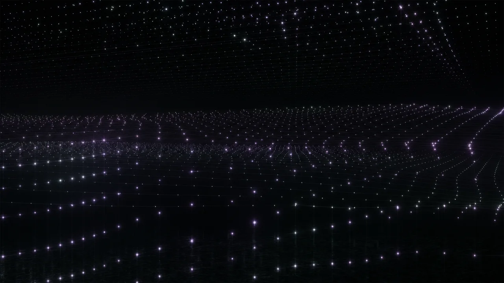
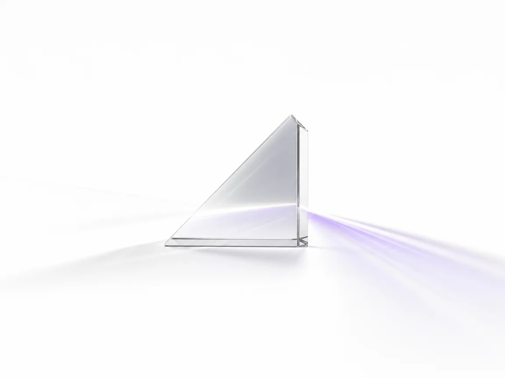

Meet NLRC AI.
A frontier reasoning model built for code, long-horizon agents, and a million tokens of context. Fast, capable, and free to try.
text · image · video
Thinks before
it speaks.
NLRC AI is a reasoning-first model. It plans, checks itself, and only then answers — so hard problems get worked through instead of guessed at.
-
Multi-step logic
Math, systems design, proofs, tricky edge cases — worked through, not pattern-matched.
-
Visible thinking
Watch the reasoning stream in before the final answer lands.
-
Production-grade output
Tuned for real workloads, not party tricks.

A million tokens of memory.
Paste an entire codebase, a 500-page spec, or a week of transcripts. NLRC AI keeps all of it in mind while it works — no chunking, no retrieval tricks, no losing the thread.
Built for real work.
Everything a frontier model should do — and a few things most of them can't.
Long-horizon coding
Designed for sustained software engineering: debugging, refactoring, and reasoning across large codebases without losing context.

Sees what you see
Text, images, and video in. Screenshots, diagrams, and UI — reasoned about, not just described.
Tool calling
Native tools and tool_choice support for agents that actually do things.
Structured output
Ask for JSON and get JSON — schema-shaped responses via response_format.
Sustained agentic work
Keeps its footing across long, multi-step tasks instead of drifting off halfway.
Watch it reason.
A reasoning model shows its work. Here's what a typical exchange looks like.
cache = {}; def get(k): return cache.get(k) or fetch(k)or treats falsy cached values (0, "", []) as misses and re-fetches; and nothing ever writes to cache, so the "stale" data must come from fetch itself — likely a module-level connection reused across requests. Check both.cache is never populated. Use an explicit membership check and store results:
def get(k): if k not in cache: # explicit miss check cache[k] = fetch(k) # actually populate return cache[k]If results still look stale, the culprit is
fetch reusing a connection with read-consistency lag — want me to look at it?
Frontier reasoning. Top of the table.
On an independent run of 10 real-world coding tasks, NLRC AI solved 8 — ahead of every frontier model it was lined up against.
| Task | fable-5 [max] | glm-5.3 [max] | gpt-5.6-sol [max] | grok-4.6 [xhigh] | nlrc-ai |
|---|---|---|---|---|---|
| anko-typed-variable-bindings | 4/4 | 4/4 | 2/4 | 1/4 | ✓ |
| arktype-json-schema-refs | 2/4 | 1/4 | 3/4 | 1/4 | ✓ |
| fastapi-deprecation-headers | 4/4 | 3/4 | 3/4 | 4/4 | ✓ |
| helm-unified-manifest-stream | 4/4 | 4/4 | 4/4 | 4/4 | ✓ |
| igel-persist-feature-schema | 3/4 | 3/4 | 0/4 | 4/4 | ✓ |
| katex-multicolumn-array-spans | 2/4 | 4/4 | 3/4 | 4/4 | ✓ |
| meriyah-explicit-resource-decl | 1/4 | 0/4 | 0/4 | 0/4 | ✓ |
| query-persist-restored-state | 2/4 | 3/4 | 1/4 | 2/4 | ✓ |
| scc-bounded-memory-spilling | 4/4 | 3/4 | 4/4 | 4/4 | ✕ |
| vulture-persistent-analysis-cache | 0/4 | 0/4 | 1/4 | 1/4 | ✕ |
| Mean on these 10 | 65% | 62% | 52% | 62% | 80% |
Independent community benchmark — 10 real-world coding tasks. Reference models: passes out of 4 attempts per task. NLRC AI: pass/fail. Highlighted row: the task every reference model scored 1/4 or worse on — NLRC AI solved it. Third-party data, small sample — directional, not definitive.
Pick a task. Or bring your own.
Zero to answer in seconds.
Get started in seconds — no account needed.
Describe the task
Type a goal in plain English. Paste the whole file, log, or document — context is not a problem.
NLRC AI reasons
It thinks through the problem step by step, then streams back its answer in real time.
Review & iterate
Refine with follow-ups. The whole conversation stays in its 1M-token memory.
Questions, answered.
What is NLRC AI?
Is NLRC AI really free?
How large is NLRC AI's context window?
Is my conversation data private?
Can I use NLRC AI on mobile devices?
Try it before the internet figures out what it is.
Free to try. No account, no card, no waitlist.
Open chat